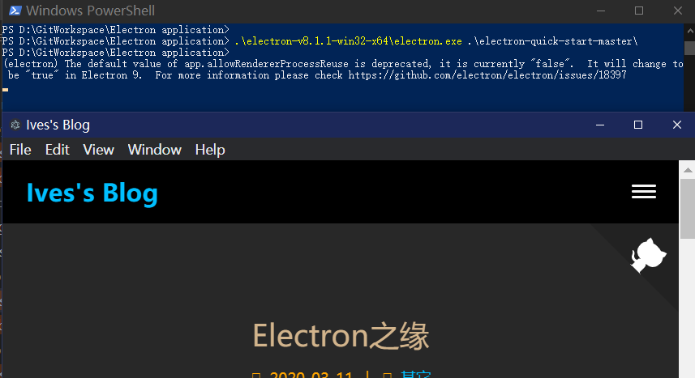

当我第一次享受到nodejs的美好的时候是玩hexo的时候。说起electron缘于和顺丰的一个大佬的愉快聊天，虽然我很诚恳的表达了我对electron的未知，但还是很感谢他给我耐心介绍了一番。事后，我记下了这个关键字，闲来无事搜索认知。
Electron之化繁为简
定义：使用 JavaScript，HTML 和 CSS 构建跨平台的桌面应用程序
如果你可以建一个网站，你就可以建一个桌面应用程序。 Electron 是一个使用 JavaScript, HTML 和 CSS 等 Web 技术创建原生程序的框架，它负责比较难搞的部分，你只需把精力放在你的应用的核心上即可。这是官网的一段原文。由此我们可以得知electron的核心设计思想就是化繁为简。
Electron特点
1. Web 技术
Electron 基于 Chromium 和 Node.js, 让你可以使用 HTML, CSS 和 JavaScript 构建应用。
2. 开源
Electron 是一个由 GitHub 及众多贡献者组成的活跃社区共同维护的开源项目。
3. 跨平台
Electron 兼容 Mac、Windows 和 Linux，可以构建出三个平台的应用程序。
那electron是怎样化繁为简的呢？
l.利用chromium项目基于c++开发的原因，chromium是跨平台的，如此便简化了跨平台的繁琐操作；
2.相比于传统桌面前端技术，没了各种语言的api（如：c/c++），没了系统gui框架api(如：mfc)，累活基本让chromium干了，开发人员只需关注业务代码，实现高定制的个性化界面，electron做到了类似于qt一样的实现自己的api，一处编写，各处运行。且呈现效果一致。js的学习难度与c/c++这种底层语言相比学习难度不知道低了多少。如此便简化了编程学习的曲线及难度；
3.electron如何保证高效的运行,拥抱开源。（这一点其实有点牵强，高不高效全建立在chromium渲染以及v8引擎，所以不适合极高速的渲染工程，像ps，3dmax这种图形图像软件或者工程测绘等实时性要求高的软件是不合适用electron框架来做的）
Electron开发入门
初识 Electron，可参考下列资料，了解如何使用 Electron 封装你的前端代码，调用丰富的 API，以及生成安装程序。
探索 Electron 的 API
Electron API 示例程序采用交互式界面展示了 Electron API 最关键的功能。发布版地址在这
从GitHub下载。
借助 Electron Fiddle 深入探索
你可以使用 Electron Fiddle 创建并运行小段 Electron 程序，从一个简单的模板开始，随心所欲地挥洒你的创意，选择一个 Electron 版本欣赏运行效果。最后，你可以将其下载保存，或推送 GitHub Gist 上，所有人都可以输入网址运行你的 Fiddle。
从Github下载
详细
关于help文档
快速启动 应用程序，看看 Electron 是如何运转的：
一个有帮助内容的 Electron 应用。
1 | # 克隆示例项目的仓库 |
或开始钻研文档。
使用 Electron 构建的应用
最初为 GitHub 开发 Atom 编辑器, Electron 此后被世界各地的公司采纳，如微软的Visual Studio Code。
有了官方文档，就可以开始干活了。
环境配置
首先，安装最新版本的Node.js 。 我们推荐您安装最新的 长期支持版本 或者 当前发行版本 。 访问Node.js下载页面，这里我选择 Windows Installer。 下载完成后， 执行安装程序，根据引导完成安装即可。
在安装过程中的配置界面, 请勾选Node.js runtime、npm package manager和Add to PATH这三个选项。
安装完成后，我们需要来确认Node.js是不是可以正常工作。 点击 开始 按钮，输入PowerShell，找到Windows PowerShell。 打开PowerShell或其他你喜欢的命令行客户端后，通过以下命令来确认 node 和 npm已经安装成功：
1 | # 下面这行的命令会打印出Node.js的版本信息 |
开发第一个程序
1 | ########################### |
离线安装
去electron/electron/releases
选择相应release版本下载安装文件。
个人对这个安装包的理解：
就是一个小型chrome浏览器，直接解压就可以使用，可以把这个解压目录加到环境变量，从而就可以直接运行electron 项目路径，如果不用环境变量，这每次执行需要运行：electron.exe的路径 项目路径.如下图我下载了一个electron-quick-start-master项目，然后把一个blog首页替换index.html即可得到一个和web一样效果的程序。
1 | #用electron启动 |

程序打包
由上步骤，我们已经得到了一个完整的web项目，可是如何发布打包成一个exe呢？
在 Windows 上, 你必须使用安装程序将你的应用装到用户的计算机上才能使用autoUpdater, 所以比较推荐的方法是用 electron-winstaller, electron-forge或 grunt-electron-installer 模块来生成Windows安装程序。
当使用 electron-winstaller 或 electron-forge 时，确保不要在第一次运行时更新你的应用程序 (详情参阅 这个问题的更多信息). 还建议使用 electron-squirrel-startup 来创建应用程序的桌面快捷方式。
使用Squirrel生成的安装程序将以com.squirrel.PACKAGE_ID.YOUR_EXE_WITHOUT_DOT_EXE,的格式创建一个带有Application User Model ID 的快捷图标,例子是 com.squirrel.slack.Slack 和 com.squirrel.code.Code.。 你应该在自己的应用中使用 app.setAppUserModelId API 方法设置相同的 API和ID，不然 Windows 将不能正确地把你的应用固定在任务栏上。
与 Squirrel.Mac 不同，Windows 版可以将更新文件放在 S3 或者其他静态主机上。 你可以阅读 Squirrel.Windows的文档来获得更多详细信息。
具体哪种打包怎么做参考相应GitHub链接即可。